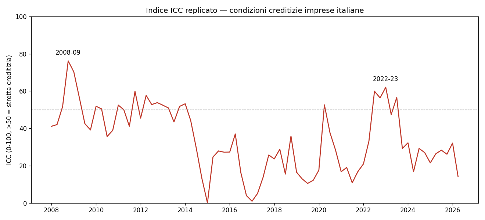
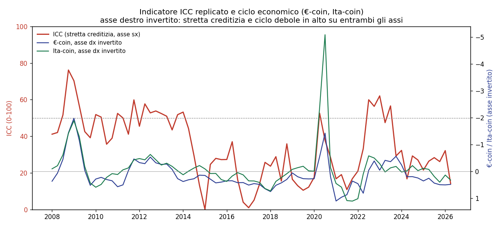

L’indicatore ICC per le condizioni creditizie delle imprese italiane
Replica pubblica, aggiornamento al 2026T2 e note di validazione
Paolo Volterra ![]()
Dal 2023 l’Ufficio Parlamentare di Bilancio pubblica nelle proprie Note sulla congiuntura un indicatore sintetico delle condizioni creditizie per le imprese italiane. L’indicatore misura la componente di difficoltà di accesso al credito non spiegata dalla sola domanda di prestiti, combinando giudizi qualitativi delle imprese e variabili di domanda creditizia. Questo working paper ricostruisce la metodologia dell’indicatore, documenta una replica indipendente basata su sole fonti pubbliche e ne aggiorna il segnale fino al secondo trimestre 2026. La replica riproduce i principali episodi storici di stretta creditizia, inclusi il 2008-09, la crisi del debito sovrano e il rialzo dei tassi del 2022-23. Nel 2025-26 l’indicatore resta sotto la soglia di restrizione, coerentemente con condizioni creditizie meno tese. Il lavoro discute inoltre la ricalibrazione della scala UPB tra la prima pubblicazione del 2023 e gli aggiornamenti successivi, la robustezza del nowcast 2026 e i limiti di copertura settoriale della misura.
credito, imprese, UPB, stretta creditizia, Bank Lending Survey, nowcasting
Versione citabile su Zenodo, con il PDF: doi.org/10.5281/zenodo.21299001.
1 Sommario
L’accesso al credito bancario è una delle condizioni più importanti per la tenuta delle imprese, soprattutto quando il ciclo economico rallenta e le fonti di finanziamento esterne diventano più selettive. Misurare una stretta creditizia, tuttavia, richiede di distinguere due fenomeni diversi: una riduzione fisiologica della domanda di prestiti e un irrigidimento dell’offerta bancaria non spiegato dalla domanda.
Questo working paper analizza l’indicatore sintetico delle condizioni creditizie (ICC) pubblicato dall’Ufficio Parlamentare di Bilancio (UPB) dal 2023 nelle Note sulla congiuntura [1], [2]. Il contributo è triplice:
- ricostruisce la logica economica dell’indicatore e la sua relazione con la letteratura su misure survey-based di credit crunch [3], [4], [5];
- documenta una replica indipendente, aggiornata fino al 2026T2, costruita con sole fonti pubbliche;
- chiarisce la discontinuità di scala tra la prima versione pubblicata dall’UPB nell’ottobre 2023 e la serie aggiornata, mensile e ricalibrata, usata nelle Note successive.
La replica non pretende di ricostruire la formula interna esatta dell’UPB, che non è pubblicata come dataset autonomo o nota metodologica separata. L’obiettivo è più limitato e verificabile: produrre una serie pubblica, aggiornata e coerente con l’impostazione dichiarata dall’UPB, utile come indicatore di contesto per analisi su credito, imprese e rischio macro-finanziario.
2 Contesto e letteratura
L’ICC nasce per misurare la componente di difficoltà di accesso al credito che non può essere attribuita al semplice andamento della domanda di finanziamenti. L’idea è diretta: se i giudizi delle imprese sulle condizioni di accesso al credito peggiorano più di quanto giustifichino il ciclo economico e la domanda di prestiti, la differenza residua segnala una tensione dal lato dell’offerta bancaria.
L’approccio è collegato alla metodologia proposta da [3] per la Germania e alla letteratura italiana basata su indagini qualitative presso le imprese. In particolare, [4] sviluppano una misura di credit crunch per l’Italia usando microdati Istat e un modello a due stadi; l’ICC pubblicato dall’UPB adotta invece una versione aggregata e più facilmente aggiornabile, basata su serie pubbliche.
La differenza è rilevante per l’interpretazione. Il metodo di [4] usa microdati d’impresa e controlla l’eterogeneità individuale; l’ICC, per come documentato nelle Note UPB, parte da un saldo aggregato dell’indagine Istat sulla fiducia delle imprese manifatturiere. La misura è quindi più replicabile, ma meno ricca sul piano microeconomico.
3 Dati
La replica utilizza tre input principali.
| Variabile | Fonte | Frequenza | Uso nella replica |
|---|---|---|---|
| Giudizi sull’accesso al credito delle imprese manifatturiere | Istat, indagine sulla fiducia delle imprese [6] | Mensile | Variabile dipendente, proxy dell’offerta percepita |
| Rendimento reale dei titoli di Stato italiani a lungo termine | Eurostat e, per i mesi più recenti, ECB SDW [7], [8] | Mensile | Proxy del costo-opportunità del credito bancario |
| Domanda di credito delle imprese | Bank Lending Survey, ECB SDW [9] | Trimestrale | Controllo diretto per la domanda di prestiti |
Le serie mensili sono aggregate a frequenza trimestrale mediante media semplice. Per il 2026 sono usate stime preliminari Istat dell’inflazione IPCA nei mesi in cui la serie armonizzata definitiva non è ancora disponibile [10]. Questa scelta consente di estendere la replica fino al 2026T2.
4 Metodo
La logica dell’indicatore può essere sintetizzata dalla regressione:
\[\text{offerta percepita}_t = \alpha + \beta_1 \text{tasso reale}_t + \beta_2 \text{domanda BLS}_t + \varepsilon_t .\]
Il residuo \(\varepsilon_t\) misura la parte dei giudizi sull’accesso al credito non spiegata dalle variabili di domanda. Nella replica, il residuo è normalizzato sull’intervallo osservato e trasformato in indice di diffusione:
model = sm.OLS(cre, sm.add_constant(pd.concat([tasso_reale, domanda_bls], axis=1))).fit()
residuo = model.resid
residuo_norm = (residuo.max() - residuo) / (residuo.max() - residuo.min())
icc = 100 * np.tanh(residuo_norm)La normalizzazione è invertita per rispettare la convenzione interpretativa dichiarata nelle Note UPB: valori più alti indicano condizioni creditizie più restrittive. Valori superiori a 50 segnalano fasi di tensione, mentre valori inferiori a 50 indicano condizioni relativamente distese.
Il flusso di calcolo procede dai tre input pubblici (giudizi Istat sull’accesso al credito, tasso reale a lungo termine, domanda di credito rilevata dalla Bank Lending Survey) alla regressione OLS, quindi al residuo, alla sua normalizzazione min-max e infine alla trasformazione tanh che produce l’indice ICC.
graph TD
A[ISTAT: giudizi sull'accesso al credito] --> D(Regressione OLS)
B[Eurostat/ECB: tasso reale a lungo termine] --> D
C[ECB Bank Lending Survey: domanda di credito] --> D
D --> E[Residuo della regressione]
E --> F[Normalizzazione min-max]
F --> G[Trasformazione tanh]
G --> H[Indice ICC 0-100]5 Ricalibrazione della scala UPB
Un punto metodologico essenziale riguarda la scala dell’indicatore. La prima pubblicazione dell’ottobre 2023 presentava una serie trimestrale con un massimo vicino a 75 punti durante l’episodio 2022-23. A partire dagli aggiornamenti successivi, l’UPB ha pubblicato una serie mensile con scala più compressa, nella quale lo stesso episodio raggiunge circa 62 punti [1], [2].
Questa differenza non implica un mutamento sostanziale della diagnosi economica: entrambe le versioni identificano il 2022-23 come una fase di stretta creditizia elevata. Cambia però la calibrazione numerica. Per questo motivo, la replica va confrontata soprattutto con la versione corrente e stabile dell’indicatore, non con la scala della prima figura pubblicata nell’ottobre 2023.
| Versione UPB | Frequenza | Scala visuale | Picco 2022-23 | Implicazione per la replica |
|---|---|---|---|---|
| Ottobre 2023 | Trimestrale | circa 0-80 | circa 75 | Prima formulazione grafica, non direttamente confrontabile con la serie corrente |
| Aggiornamenti 2024-2026 | Mensile | circa 40-65 | circa 62 | Bersaglio di confronto più appropriato per la replica |
| Replica pubblica | Trimestrale | 0-100 | 62,0 nel 2023T1 | Coerente con la versione corrente, pur con metodo semplificato |
6 Risultati
La serie replicata individua tre episodi principali di stretta creditizia per le imprese italiane:
| Episodio | Periodo | Intensità | Contesto |
|---|---|---|---|
| Crisi finanziaria globale | 2008-2009 | Massima registrata | Crollo della fiducia bancaria a livello internazionale |
| Crisi del debito sovrano | 2011-2012 | Elevata | Tensioni sui titoli di Stato dell’area euro |
| Rialzo dei tassi BCE | 2022-2023 | Elevata | Politica monetaria restrittiva contro l’inflazione |
Nel 2025-26 la replica colloca l’indicatore stabilmente sotto la soglia di 50. La lettura è coerente con un allentamento delle condizioni creditizie rispetto al picco del 2022-23 e con il miglioramento segnalato nelle Note UPB più recenti [2].
| Trimestre | ICC replicato |
|---|---|
| 2025 T2 | 26,3 |
| 2025 T3 | 28,3 |
| 2025 T4 | 26,1 |
| 2026 T1* | 32,1 |
| 2026 T2* | 14,2 |
L’asterisco indica trimestri che incorporano stime preliminari per una parte dei dati di inflazione.

Indicatore ICC replicato, 2008-2026. La linea tratteggiata indica la soglia di 50 tra condizioni espansive e restrittive.
7 Robustezza del nowcast
Il calcolo del tasso reale a lungo termine richiede inflazione e rendimento nominale per lo stesso periodo. Le serie europee definitive arrivano con ritardo, per cui la replica usa le stime preliminari Istat dell’IPCA e la serie ECB SDW dei rendimenti a lungo termine per chiudere il pannello fino al 2026T2.
L’incertezza introdotta da questa scelta appare contenuta nella fase recente. Simulando un errore di stima di 0,3 punti percentuali sull’inflazione, superiore alla revisione storicamente ordinaria nei mesi recenti, l’indice cambia di meno di un punto.
| Scenario sull’inflazione stimata | ICC 2026 T1 | ICC 2026 T2 |
|---|---|---|
| Stima adottata | 32,1 | 14,1 |
| Errore ipotetico di -0,3 punti percentuali | 32,6 | 14,6 |
| Errore ipotetico di +0,3 punti percentuali | 31,7 | 13,7 |
Una verifica retrospettiva sul 2025T4 conferma l’ordine di grandezza: ricostruendo quel trimestre come se i dati definitivi non fossero ancora disponibili, il valore stimato dell’indice è 26,0 contro 26,2 con dati definitivi. Il limite è che l’errore di nowcast non è costante: durante shock inflazionistici rapidi, come nel 2022-23, le revisioni potenziali possono essere più ampie.
8 Relazione con il ciclo economico
Il confronto con €-coin e Ita-coin, indicatori ciclici coincidenti di Banca d’Italia per l’area euro e per l’Italia [11], mostra una correlazione negativa: le fasi di stretta creditizia coincidono con fasi di ciclo debole. La relazione è più forte con il ciclo dell’area euro che con quello italiano, coerentemente con il ruolo della politica monetaria comune.
Nel campione analizzato, tuttavia, l’ICC appare soprattutto un indicatore coincidente delle tensioni creditizie, non un indicatore anticipatore robusto del ciclo economico a diversi trimestri di distanza.

Indicatore ICC replicato a confronto con €-coin e Ita-coin. L’asse destro è invertito per rendere visivamente comparabili le fasi di debolezza del ciclo con le fasi di stretta creditizia.
9 Limiti
Il primo limite riguarda la copertura settoriale. Sia la versione UPB sia la replica usano come input principale il saldo dei giudizi delle imprese manifatturiere. L’indicatore non misura quindi direttamente le condizioni di accesso al credito nei servizi, nelle costruzioni o nel commercio.
Il secondo limite riguarda la replicabilità della formula ufficiale. L’UPB pubblica il grafico e la descrizione metodologica dell’indicatore nelle Note sulla congiuntura, ma non una serie dati standalone né una specifica completa della procedura di combinazione delle variabili di domanda. La serie presentata qui è quindi una replica pubblica coerente con la metodologia dichiarata, non la serie ufficiale.
Il terzo limite riguarda la normalizzazione. Poiché l’indice è calibrato sulla storia campionaria disponibile, il livello assoluto va interpretato con cautela. Il confronto più informativo è temporale: picchi, fasi restrittive, fasi distese e persistenza del segnale.
10 Conclusioni
L’ICC è una misura sintetica utile per leggere le tensioni sul credito alle imprese italiane, perché separa il peggioramento delle condizioni percepite dalla sola dinamica della domanda di prestiti. La replica pubblica presentata in questo working paper riproduce i principali episodi storici identificati dall’UPB e consente di aggiornare il segnale fino al 2026T2.
Il risultato più rilevante per la fase recente è che l’indicatore resta sotto la soglia di restrizione nel 2025-26. La lettura è compatibile con condizioni creditizie meno tese rispetto al rialzo dei tassi del 2022-23. L’uso più promettente della serie è come variabile di contesto in analisi su credito bancario, fragilità delle imprese e rischio di deterioramento, tenendo presente il limite di copertura manifatturiera.
11 Come citare
Volterra, P. (2026). L’indicatore ICC per le condizioni creditizie delle imprese italiane: replica pubblica, aggiornamento al 2026T2 e note di validazione (Working paper, versione 1.0.0). Zenodo. https://doi.org/10.5281/zenodo.21299001
12 Riferimenti
Trasparenza sull’uso dell’intelligenza artificiale
L’uso di strumenti di intelligenza artificiale generativa è dichiarato esplicitamente in quanto parte del processo di lavoro seguito nella redazione del presente documento. Tali strumenti sono stati impiegati a supporto della lettura, della sintesi, della riorganizzazione argomentativa e della revisione testuale, sempre nell’ambito di un processo pienamente controllato dall’autore.
La responsabilità per le fonti utilizzate, le analisi condotte, le verifiche effettuate, le interpretazioni proposte e le conclusioni formulate resta interamente in capo all’autore.
L’intelligenza artificiale è stata utilizzata come ambiente di supporto cognitivo ed editoriale, non come fonte primaria, autore autonomo o sostituto del giudizio critico.